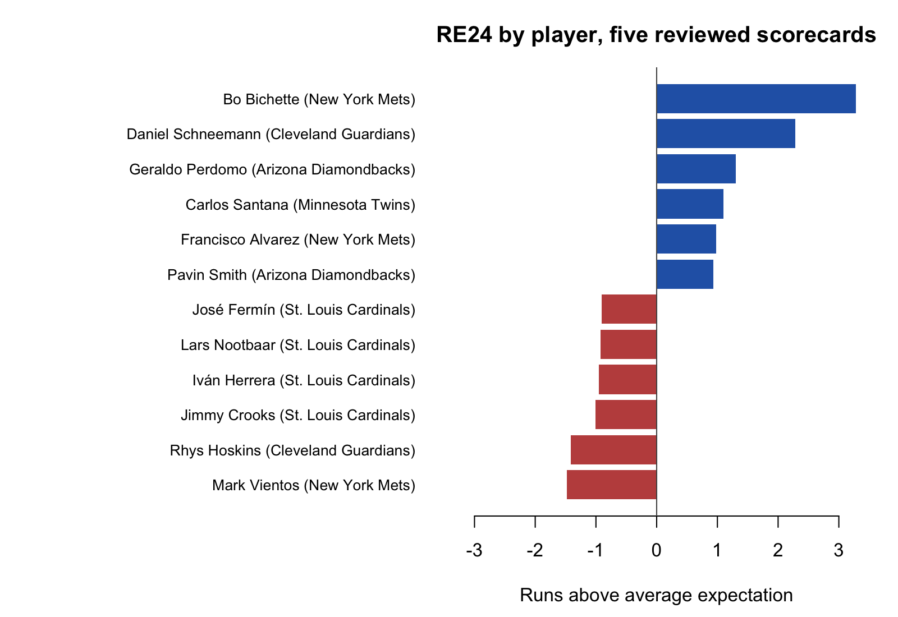

daimondstats turns baseball and softball games kept on paper into answers a coach, scorekeeper, or fan can use. The dAImond Inning app reads photographed scorecards; this package analyzes the reviewed plays: amateur batting stats such as on-base percentage with errors (OBPE), youth pitch-count checks against Pitch Smart, run value (RE24), comparisons of the games you scored with a team’s full season, and a one-page season report.
Intended audience
The package is for amateur and youth coaches, team scorekeepers, baseball fans who score games, and sports analytics students who use R. It answers questions such as who gets on base when errors are counted, which pitchers are rested enough to pitch today, and whether the games someone scored were unusual within a season. It does not establish that attending or scoring a game changes its outcome.
Installation
Requires R 4.1.0 or later. Install from GitHub:
# install.packages("remotes")
remotes::install_github("kwoolaid725/msds-457", subdir = "daimondstats")To include the vignette, add build_vignettes = TRUE (needs knitr and rmarkdown). It is also on this site under Articles.
The runtime uses jsonlite (MLB schedules, reports) and httr2 (the app’s API) plus packages distributed with R (graphics, grDevices, stats, utils); plots use base R graphics. roxygen2 is an optional development dependency for generating help files.
Basic usage
library(daimondstats)
# Amateur batting stats, including on-base percentage with errors (OBPE):
youth <- calculate_youth_stats(reviewed_scorecards, min_pa = 4)
head(youth[order(-youth$OBPE), c("player", "PA", "OBP", "OBPE")])
# Pitch Smart check on a fictional 12U month:
checks <- check_pitch_counts(demo_pitch_log)
checks[checks$status != "ok", ]
# One-page HTML season report:
season_report(reviewed_scorecards, "season.html", pitch_check = checks, min_pa = 4)
# Your own games from the app (needs an API key from Settings > API keys):
# daimond_auth("di_pat_...")
# season <- daimond_games(from = "2026-04-01")
# Included reviewed plays from five team scorecards:
batting <- calculate_batting_stats(reviewed_scorecards)
head(batting)
# Was the scored Twins game unusual within the 2024 Twins season?
twins <- subset(reviewed_team_seasons, team == "Minnesota Twins")
set.seed(457)
compare_personal_season(twins, "746804", metric = "run_diff")$summary
# Fictional eight-game reference season for learning the interface:
games <- data.frame(game_id = letters[1:8], team = "Demo", season = 2026,
home = rep(c(TRUE, FALSE), 4), win = c(1, 0, 1, 1, 0, 0, 1, 0))
set.seed(457)
result <- compare_personal_season(games, c("a", "b", "c"), simulations = 100)
result$summary
# Real RE24 for the five reviewed scorecards:
impact <- calculate_run_impact(reviewed_base_out, run_expectancy_fangraphs)
plot_run_impact(impact, top = 12)
The comparison returns observed averages, a simulated reference range, and a percentile. The range describes sampled game collections, not a causal effect.
Available functions
-
daimond_auth()anddaimond_games()download your reviewed scorecards from the dAImond Inning app with a personal API key. -
calculate_youth_stats()returns OBPE, ISO, strikeout and walk rates, and BABIP, pooled across games, with a small-sample flag. -
check_pitch_counts()checks pitching days against Pitch Smart daily maximums and rest days (ages 7 to 18). -
season_report()writes a self-contained one-page HTML season report. -
import_scorecards()reads a Plays CSV and retains review flags. -
calculate_batting_stats()returns player/game counts and BA, OBP, SLG, OPS. -
compare_personal_season()samples comparable game collections. -
calculate_run_impact()adds RE24 using a supplied 24-state expectancy table. -
plot_run_impact()draws total RE24 by player and returns the totals. -
season_games()turns an MLB schedule into one row per completed game.
Data and current limits
reviewed_scorecards contains 179 plate appearances from five team scorecards, spanning multiple teams and seasons. It is not a complete reference season. reviewed_base_out adds MLB base-out transitions for the same team sides (188 events, joined one to one with the 179 plate appearances), and run_expectancy_fangraphs is the published FanGraphs matrix. reviewed_team_seasons holds the full 162-game season for each scorecard team, built from MLB schedules, for real season comparisons. pitch_smart_rules holds the Pitch Smart limits used by check_pitch_counts(). Three smaller datasets support learning and testing: demo_scorecards (11 fictional entries for checking formulas by hand), demo_pitch_log (a fictional 12U pitching month), and twins_scorecard_2024 (35 Twins plays from April 29, 2024). Run-impact inputs must be independently verified by the caller. Review flagged plays before calculating batting statistics and avoid duplicate game imports.
Two vignettes walk through real use: vignette("coaching-a-season") covers loading data, OBPE, pitch counts, and the season report, and vignette("from-scorecard-to-run-value") goes from batting lines to RE24. See ?compare_personal_season and ?calculate_run_impact for input contracts, runnable examples, return values, and interpretation limits. The scorecard data guide retains detailed provenance, validation rules, and development checks.
Development status and license
Version 0.1.0 connects the package to the dAImond Inning app and adds youth statistics, Pitch Smart checks, and season reports; tests now use testthat. Version 0.0.5 added season_games() and real team seasons. Version 0.0.4 added real-event RE24 data, a plotting function, and a vignette. From the repository root, regenerate documentation with roxygen2::roxygenise("daimondstats"). The package uses the MIT license; see LICENSE. ChatGPT assisted with implementation and documentation, including the documentation review on November 1, 2026. Claude assisted with the version 0.0.4 to 0.1.0 base-out data, plot function, vignettes, season adapter, youth statistics, pitch-count check, API client, and season report.